Espace presse
Tout ce qu’il faut pour parler de Siflo : présentation, fiche d’identité, visuels libres d’utilisation, film et contact direct.
Siflo en bref
Siflo est une messagerie de groupe française pour garder le contact dehors, même sans réseau. Quand les antennes manquent (canyon, montagne, spéléo) ou saturent (festival, rassemblement), les messages, photos, vocaux, signaux et SOS passent de téléphone en téléphone par Bluetooth et Wi-Fi de proximité. Dès qu’un téléphone capte de chaque côté, internet fait le pont avec ceux qui sont loin, et une radio LoRa compatible Meshtastic porte les messages courts bien plus loin, jusqu’à plusieurs kilomètres en terrain dégagé.
Elle est gratuite, sans annonces, sans compte ni numéro de téléphone, et les conversations sont chiffrées de bout en bout.
Fiche d’identité
- Éditeur
- Guardia SAS, société française
- Créateur
- Paul Asquin, pratiquant de canyon, de spéléo et d’escalade
- Sortie
- Octobre 2026 sur Android, novembre 2026 sur iPhone
- Compatibilité
- Android 8 ou plus récent, iOS 17 ou plus récent ; Apple Watch avec l’iPhone, montres Garmin et Amazfit avec un téléphone Android
- Prix
- Gratuite, sans annonces ni abonnement. Un pourboire facultatif est possible depuis les réglages, sur Android pour l’instant.
- Portée
- Environ 25 m téléphone en poche, environ 100 m en main et à vue, jusqu’à 300 m entre deux Android avec le Bluetooth longue portée, de 500 m à 2 km avec une radio LoRa à la ceinture et jusqu’à 5 km en main et à vue (estimations, textes et signaux seulement). Chaque téléphone relaie les messages des autres.
- Chiffrement
- De bout en bout pour les conversations : en privé sur le principe de Signal, une clé neuve à chaque message ; en groupe, une clé qui change chaque jour et à chaque départ d’un membre. Le SOS à tous les téléphones proches et le canal de proximité, faits pour être lus par tous, sont signés mais pas chiffrés. Les mécanismes clés ont été vérifiés par des outils de preuve mathématique : détails sur siflo.app/labs.
- Données
- Ni compte ni numéro de téléphone. Les serveurs relais gardent les messages chiffrés 48 h au plus, sans pouvoir les lire.
Ce qui la distingue
- Des groupes privés, sur invitation par QR code, même sans réseau.
- Un relais par internet dès qu’un téléphone capte de chaque côté.
- Les radios LoRa du commerce compatibles Meshtastic, pour les longues distances.
- Un SOS relayé par tous les téléphones Siflo à portée, même ceux d’autres groupes. Il complète l’appel au 112, qu’il ne remplace pas.
- Des signaux en gros boutons, inspirés des codes du sifflet, avec « reçu » et « vu » pour chacun.
- Le topo de la sortie et la carte de la zone, partagés par l’organisateur et lisibles sans réseau chez chaque membre.
- Des groupes suivis par des secouristes vérifiés, créés en un lien par un guide ou une base de canyon.
- Les alertes sur la montre : Apple Watch, Garmin et Amazfit.
Ils en parlent
- Siflo, le meilleur de BitChat et de Signal, pour les festivals ou la montagneAndroid MT (Ouest-France), 12 novembre 2026
Visuels et vidéo
Libres d’utilisation pour parler de Siflo. Mention « Siflo » appréciée.
Proposition d’article
Un texte de présentation, avec ses images et leurs légendes, comme point de départ pour votre propre article : version générale ou version pour la presse montagne (Google Docs).
Logo


Illustrations

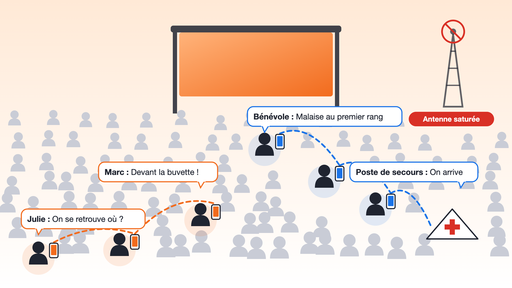
Au festival, sans passer par l’antenne saturée
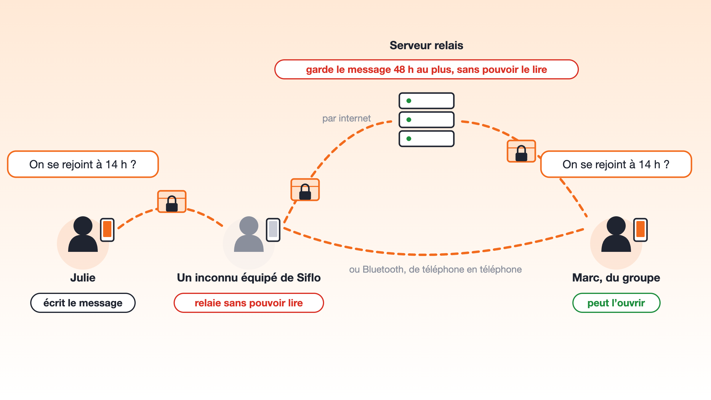
Qui peut lire un message en chemin
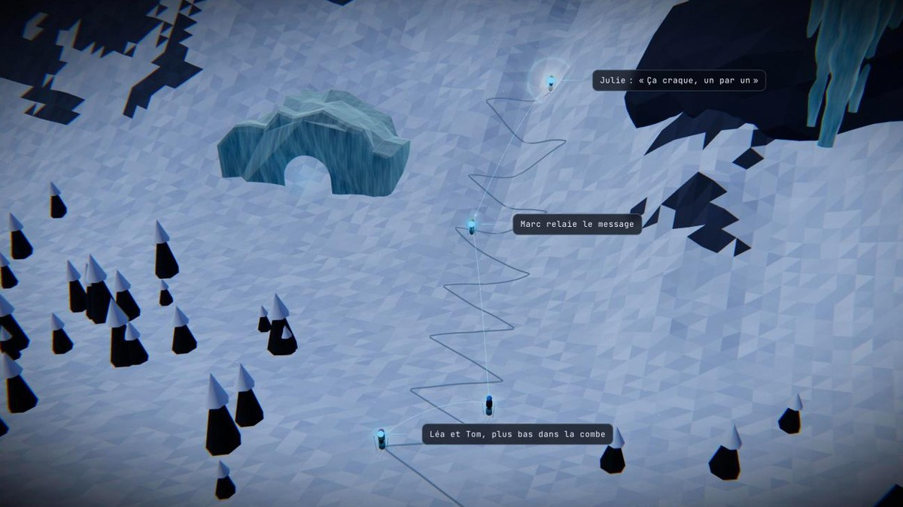
En ski de randonnée, de skieur en skieur
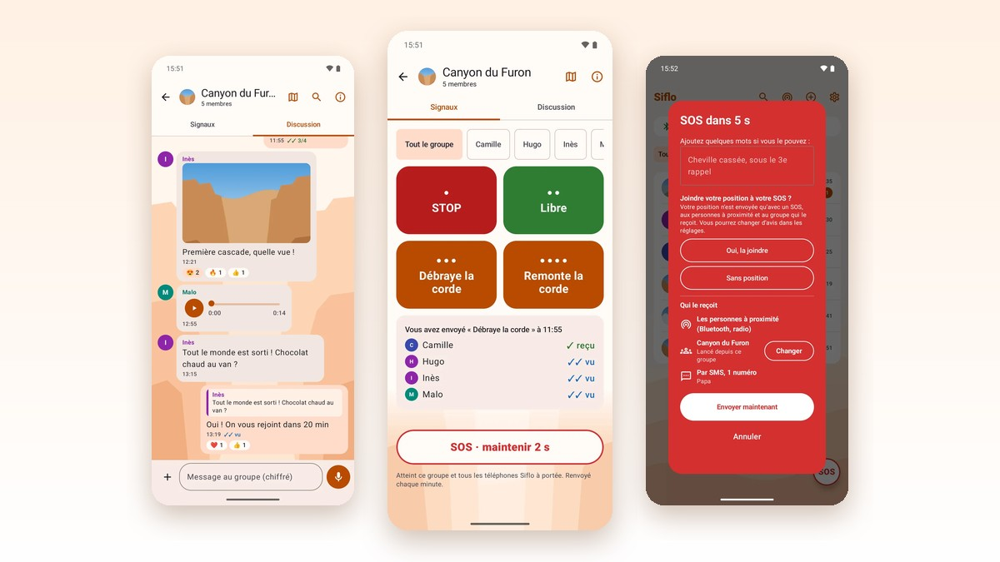
La discussion, les signaux et le SOSCaptures d’écran

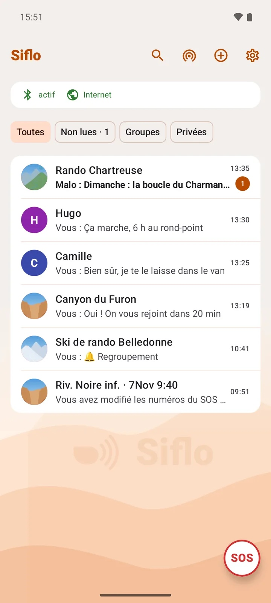
Accueil
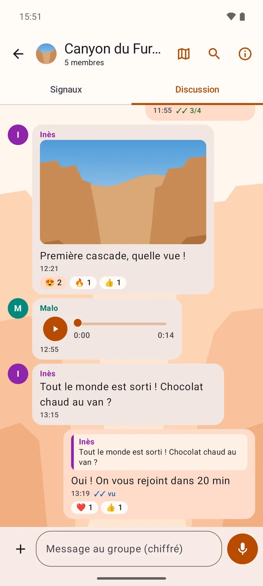
Discussion de groupe
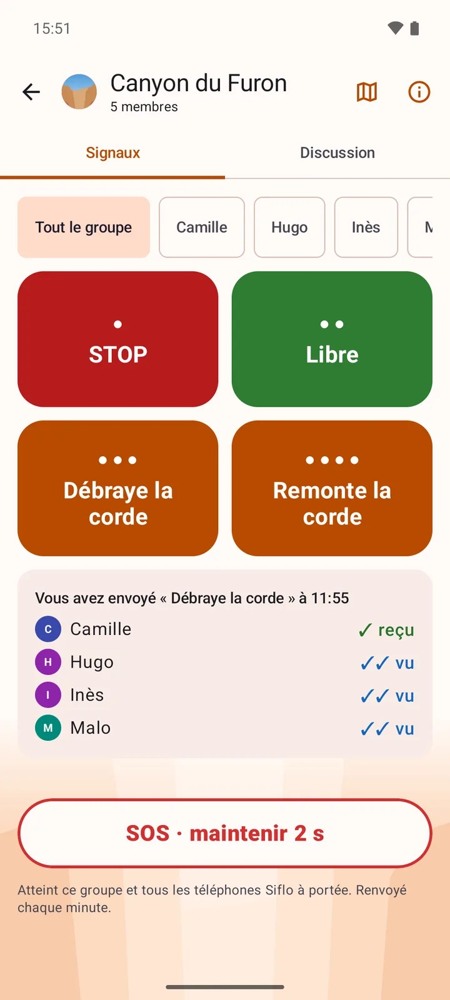
Signaux
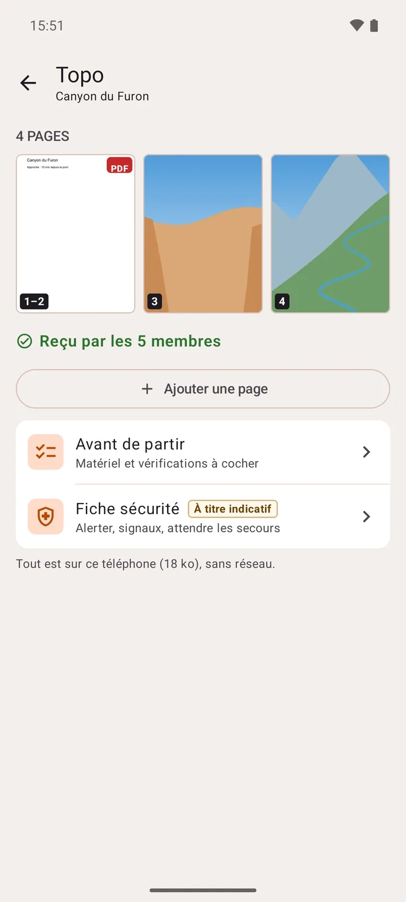
Topo de la sortie
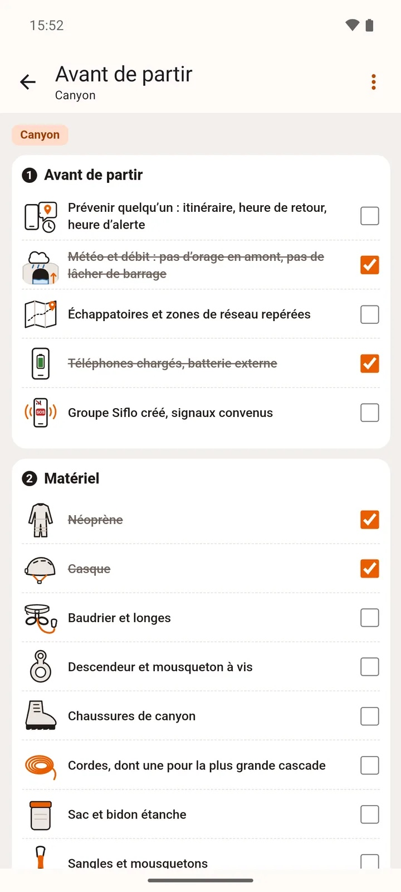
Avant de partir
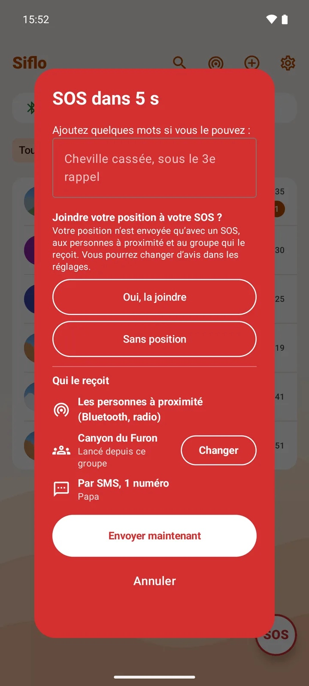
SOS
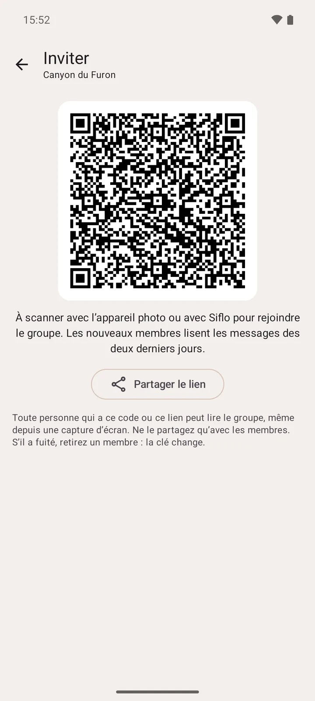
Invitation par QR code
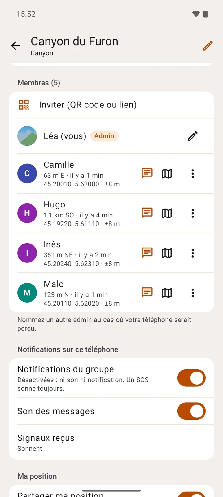
Distance des membres
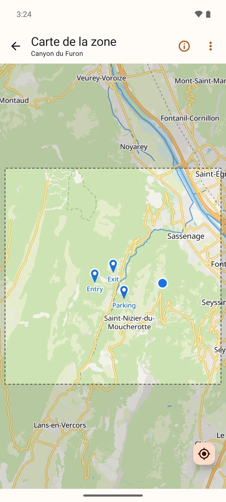
Carte hors ligneFilm
Siflo en une minute, au format vertical : télécharger le MP4 (720p, 7 Mo) ou le voir sur YouTube.
Contact
Paul Asquin, créateur de Siflo, répond directement aux questions et aux demandes de test. Écrivez-lui : un entretien par téléphone peut se fixer ensuite.
Siflo sur les réseaux : Bluesky, X, Instagram et Threads.